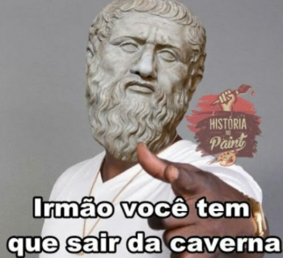
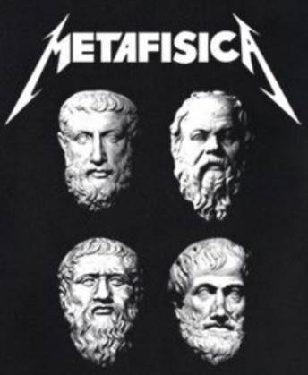
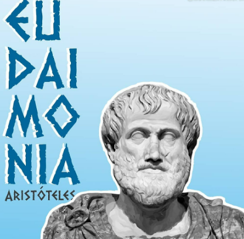

-
Biografia

Sua História
Aristóteles nasceu em Estagira, na Macedônia, em 384 a.C. Com 17 anos, partiu para Atenas e começou a frequentar a Academia de Platão. De origem aristocrática, causou admiração e se tornou o discípulo predileto do mestre, que observou: “Minha Academia se compõe de duas partes: o corpo dos estudantes e o cérebro de Aristóteles”. Fundou sua própria escola chamada Liceu. Em 322 a.C morreu em Cálcis, na Eubeia. Forte influência até hoje.
-
Platão e Aristóteles
Diferenças
O que mais diferencia são suas crenças sobre o real. Platão partia do princípio de que a realidade em sua essência não está presente nas experiências do cotidiano. Por outro lado, Aristóteles considerava que o mundo cotidiano era mais autêntico que o chamado mundo das ideias de seu professor. A pintura de Rafael "A Escola de Atenas" presente no fundo do site mostra isso, Aristóteles com a mão para baixo sinalizando a Terra e ensinamentos morais e Platão com a mão para cima fazendo alusão ao mundo das ideias.
-
Principais ideias e frases
Ideias e Frases
A filosofia de Aristóteles abrange a natureza de Deus (Metafísica), do homem (Ética) e do Estado (Política). "Nunca existiu uma grande inteligência sem uma veia de loucura." "O sábio nunca diz tudo o que pensa, mas pensa sempre tudo o que diz." "Nosso caráter é o resultado da nossa conduta."
-
Metafísica
Metafísica
Aristóteles afirmava que a filosofia primeira (metafísica) se ocupava da investigação "do ser enquanto ser". Para Aristóteles, Deus não é o Criador, mas o motor do universo. Deus não pode ser resultado de alguma ação, não pode ser escravo de amo algum.Ele é a fonte de toda a ação, o amo de todos os amos, o instigador de todo o pensamento, primeiro e último Motor do Mundo.
-
Eudaimonia
Eudaimonia
Segundo o pensamento aristotélico, a felicidade (eudaimonia) é o único objetivo do homem. E se para ser feliz, é preciso fazer o bem a outrem, então o homem é um ser social e, mais precisamente, um ser político. Com efeito, cabe ao Estado “garantir o bem-estar e a felicidade dos seus governados”.A busca pela felicidade seria uma finalidade natural dos seres humanos. A felicidade é um fim em si mesma, (ser feliz é o objetivo da própria felicidade) os seres humanos buscam a boa-vida, justa e feliz.Para isso, é necessário buscar o justo-meio, a prudência e o conhecimento prático capaz de conduzir o indivíduo no caminho virtuoso para o bem.